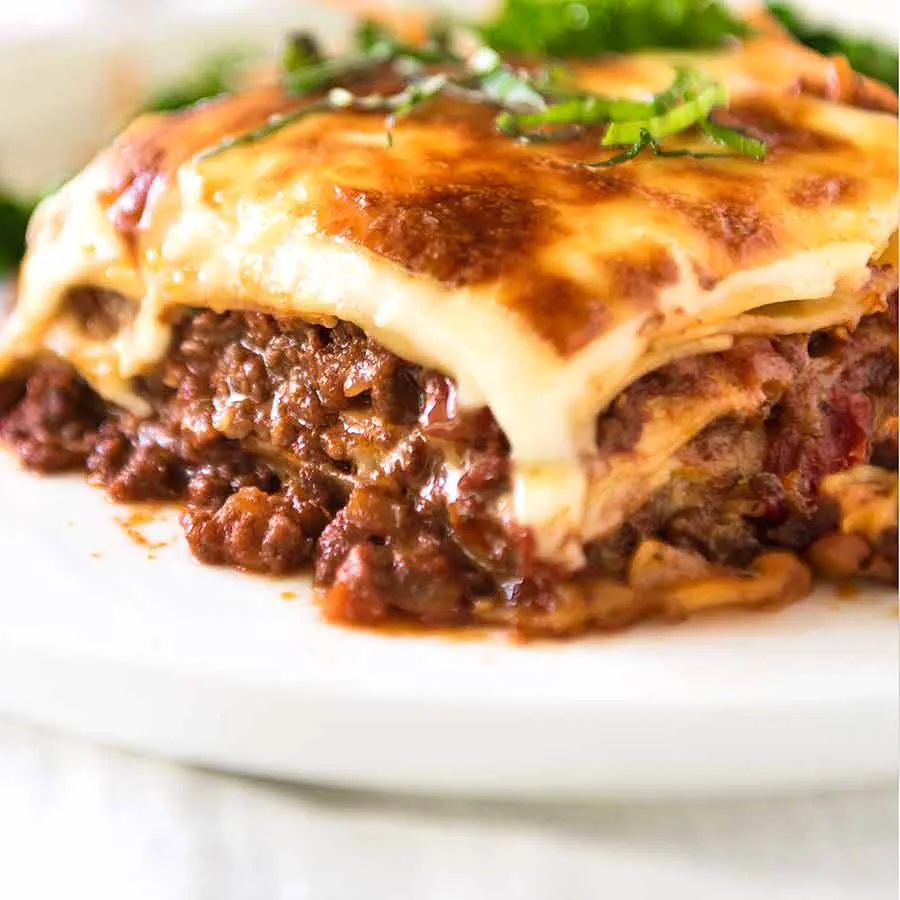

Nish's Recipes
A collection of my recipes for me and you!
Lasagne
Lasagne is an italian dish names after the type of pasta used in it. It is made of stacked layers of lasagne alternating with filings such as ragu, beshamel sauce, vegetables, cheeses and seasonings and spices.
prep time: 1 hr
Cook time 3hrs 10mins
View RecipeCurry

Curry is a dish witha sauce seasoned with spices, mainly associated with South Asian cuisine. This recipe will look at using a masala mix to make a Chicken curry.
prep time: 20 hr
Cook time 1 hr
View Recipe